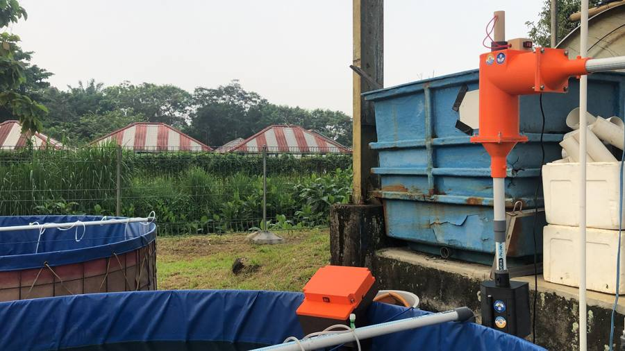
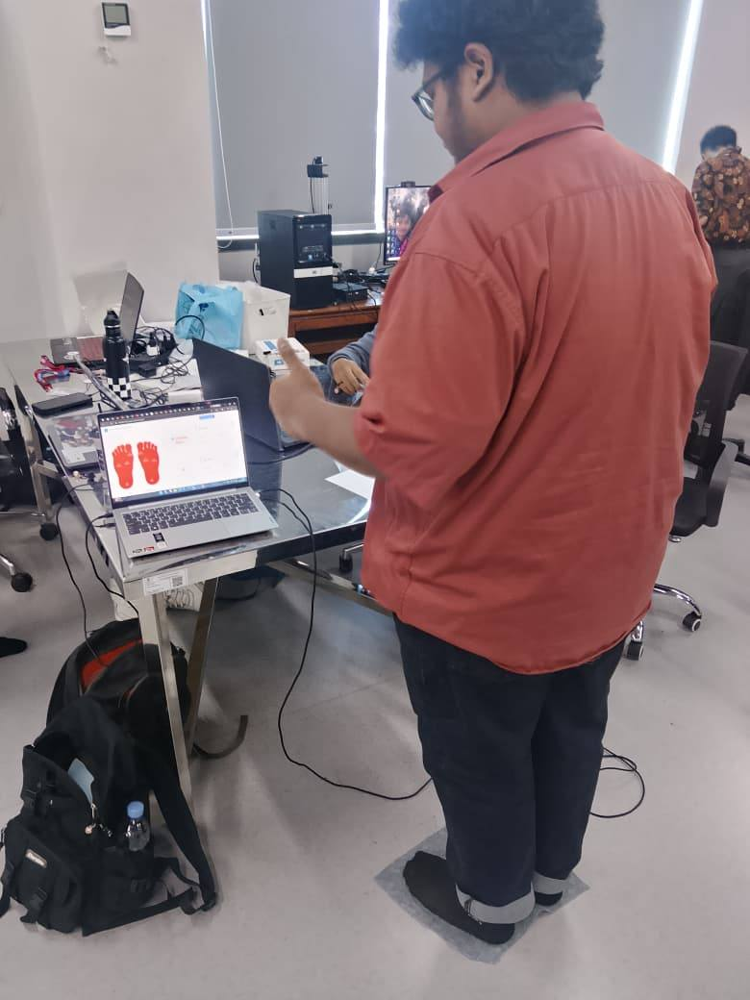
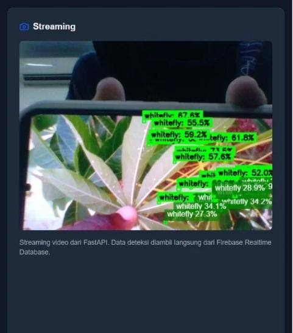
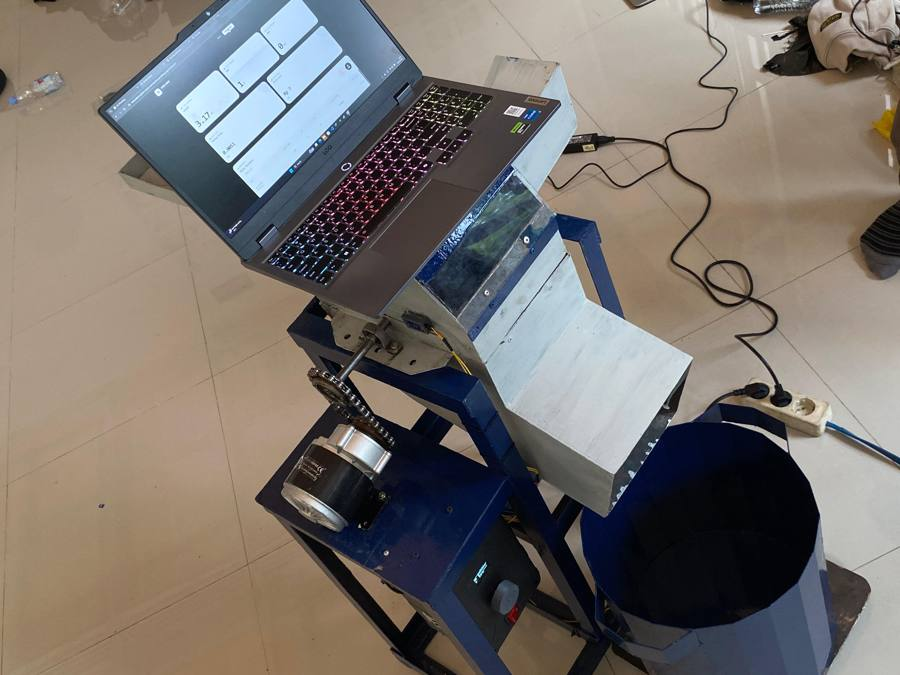
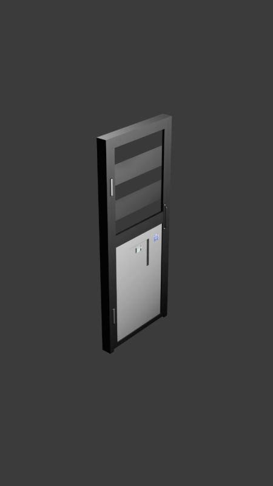
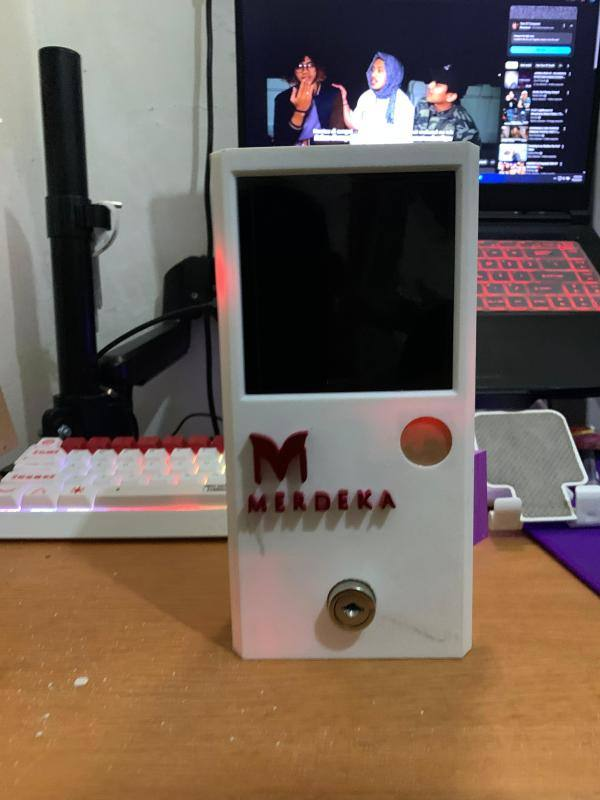
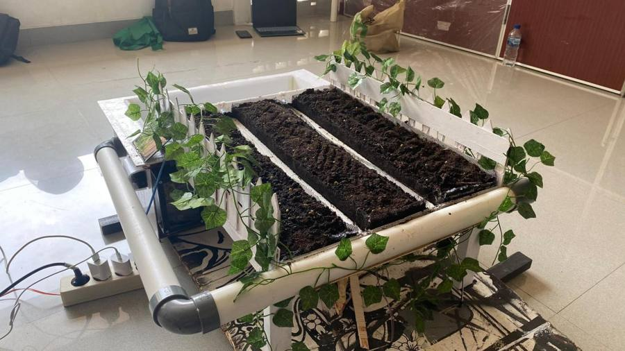
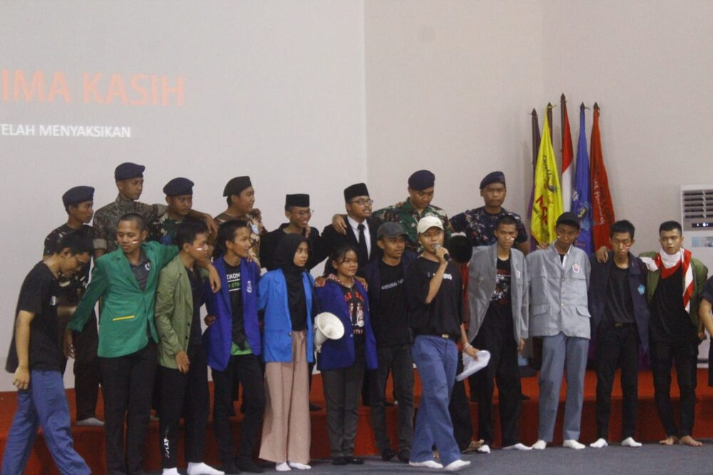
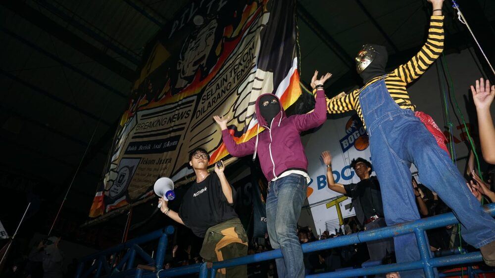
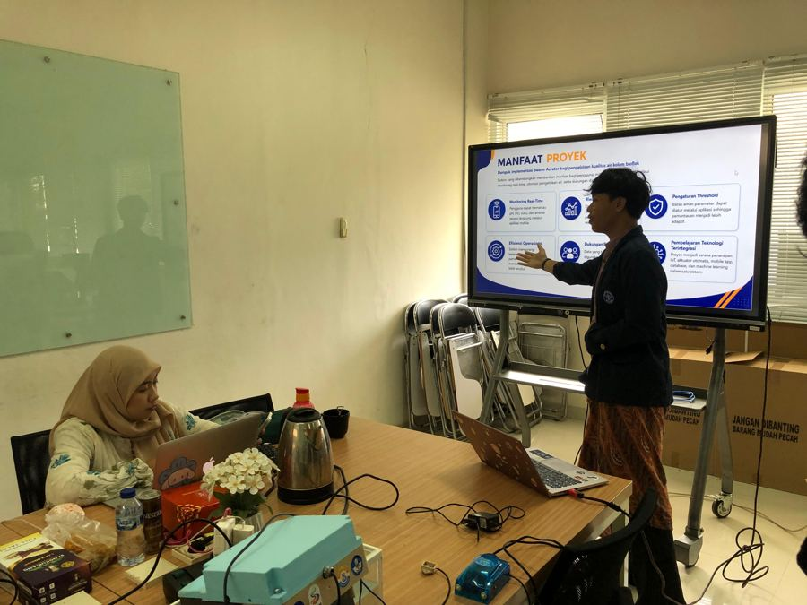

Computer Engineering student building embedded systems, IoT platforms, and applied computer vision — from ESP32 firmware to research deployed with BRIN and IPB University.
A quick profile — read from the terminal, or the card next to it.
Professional roles and collaborations — from technical support to research at a national agency.
Eight embedded and full-stack systems spanning agriculture, aquaculture, healthcare, security, and access control.

LECTURER RESEARCH PROJECTSWARMAutonomous IoT-based swarm aeration system developed as part of an IPB University lecturer research project. Multiple ESP32-based aerator nodes collaborate using distributed communication, adaptive scheduling, real-time monitoring, and Random Forest-based intelligence to improve aquaculture efficiency.

HEALTHCARE AI • BRIN INTERNSHIPPLANTARResearch conducted during my internship at BRIN, developing an intelligent plantar pressure monitoring platform using distributed FSR sensors, ESP32, IoT communication, and Center-of-Pressure analysis for gait assessment and rehabilitation.

AGRICULTURE IOTFARMSHIELDSensor-driven crop protection system built on ESP32 hardware, continuously reading field conditions through an IoT sensor network and flagging threats before they spread across a crop.
Vision-based monitoring system for tracking conditions across remote terrain, using a Python and OpenCV pipeline with a YOLO detection model to interpret camera feeds in real time.

AUTOMATIONCHOP-XArduino-based embedded automation unit with a closed-loop control system, built to take a repetitive manual processing task and run it unattended.

SECURITYSENTRYAn automatic door system that uses computer vision to recognize authorized individuals and grant access without physical contact. When it detects a registered face or approved credential, an ESP32-controlled actuator unlocks the door in real time — unrecognized attempts are flagged and logged.

ACCESS CONTROLDOOR/LOCKKeyless entry system with authenticated access logs and remote control, built for the UT Digital Hackathon 2025.

AGRICULTURE IOTSIROAutomated irrigation scheduling system driven by live soil-moisture and weather data, running on ESP32 sensor nodes with a MySQL-backed dashboard for tracking watering history.
On-device tools that run on the hardware, and everything around them that makes a system usable.
From firmware to field deployment — the core capabilities behind the projects above.
Networking, cybersecurity, and research credentials from Cisco Networking Academy, BNSP, BRIN, and beyond — plus a registered copyright and a hackathon appreciation. Click any file to Quick Look it.
Expeditions, field coordination, and presenting research results — the parts of the job that happen away from a screen.
Led the organization through two years of expeditions and operations — setting objectives, delegating across teams, and staying accountable for outcomes in the field.
Coordinated logistics for multi-day expeditions: routes, equipment, safety protocol, and contingency planning where a missed detail has real consequences.
Built the communication discipline that made a volunteer team function like a unit — clear briefings, fast decisions, and a culture where every member knew the plan.



Open to research collaborations, embedded/IoT engineering roles, and teams building intelligent hardware.